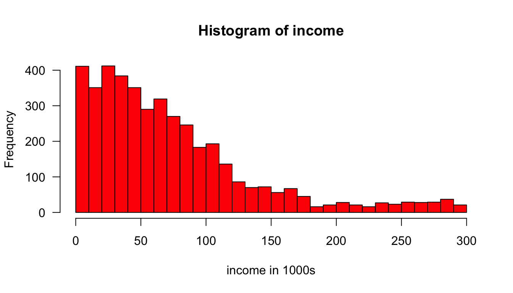
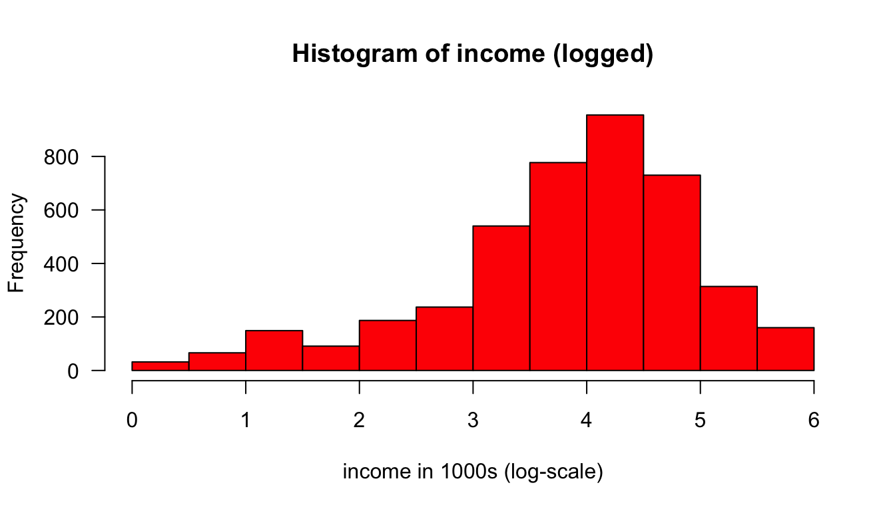
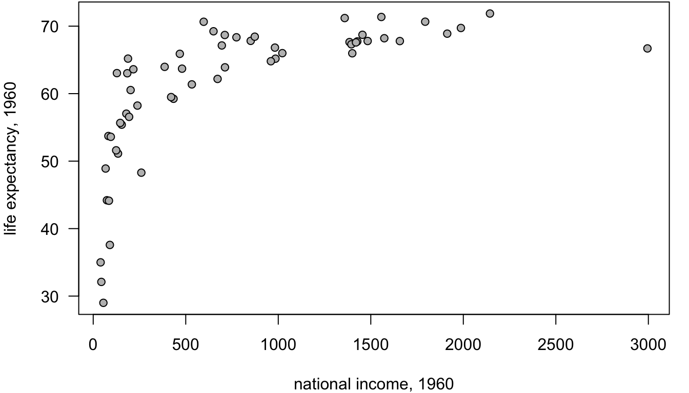
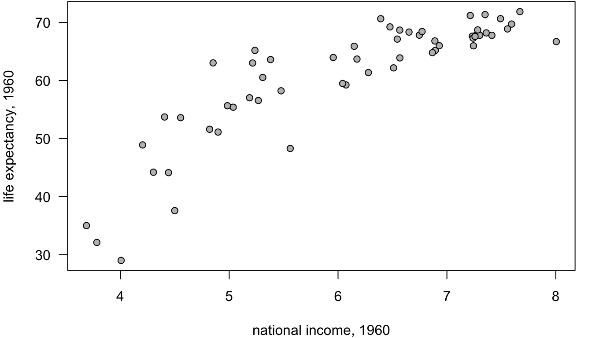
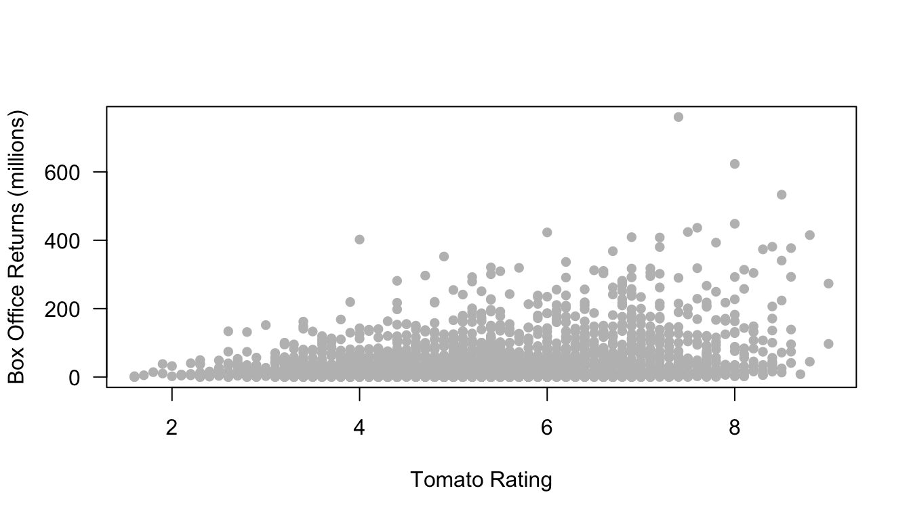
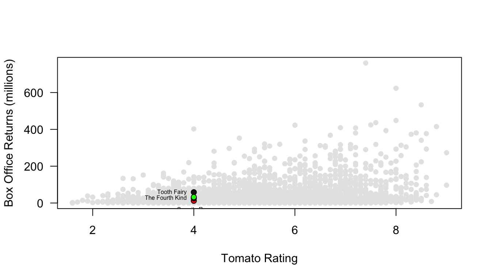
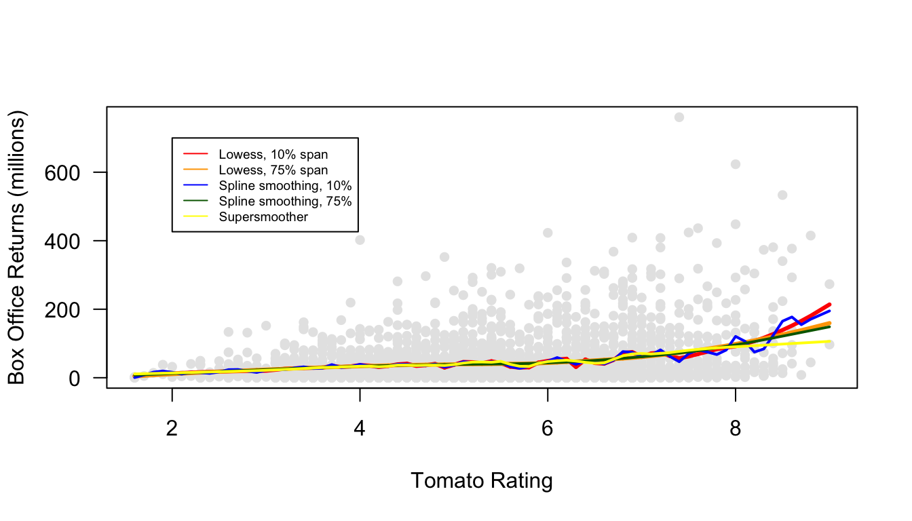
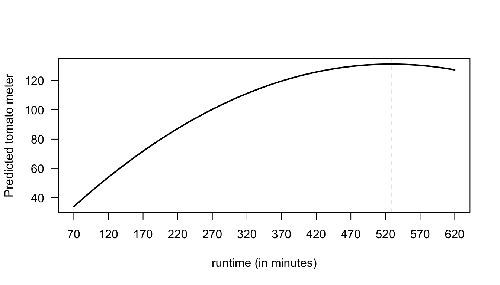

Modeling Non-Linearity
You transform your data when you apply a mathematical function to a variable to transform its values into different values. There are a variety of different transformations that are commonly used in statistics, but for this class we will focus on the one transformation that is most common in the social sciences: the log transformation.
Why would you want to transform your data? There are two important potential benefits that transformations can provide. First, a transformation can often resolve the problem of non-linear relationships. If the relationship between \(x\) and \(y\) is non-linear, then by transforming one or both variables, you may be able to recover a linear relationship. Second, transformation can reduce skewness in a variable and will pull in extreme outliers so that they are less influential. For these reasons, transformations can be useful in regression models. However, it is important to also remember that a transformation changes the way in which x and y relate to one another and thus requires us to adjust our interpretation of results.
The natural log transformation
When I talk about the “log” transformation, I am talking about what you probably learned as the “natural log” transformation. This transformation is given to you by the “ln” button on your calculator. For our purposes, this is the only “log” we care about. Just remember that in Eugene, we go natural.
Any positive number can be logged. For example, I can calculate the log of the number 7:
log(7)## [1] 1.94591OK, the natural log of 7 is 1.9459101. But what does that mean? The natural log of a number is defined as the value you would have to raise the constant \(e\) (2.718282) to in order to get back the original number. To raise \(e\) by some number, you can use the exp function in R (“exp” for “exponential”):
exp(log(7))## [1] 7Ta-da! If I raise \(e\) to the log of 7, I get back 7. The number \(e\) is a very special number like \(\pi\) having to do with what happens when you compound interest continually over time, but none of that matters for our purposes. For our purposes, what matters is that by logging a number you can make a multiplicative relationship into an additive relationship. This is because of a basic mathematical relationship where:
\[e^a*a^b=e^{a+b}\] \[log(x+y) = log(x)+log(y)\] You can try this out in R to see that it works:
exp(2)*exp(3)## [1] 148.4132exp(2+3)## [1] 148.4132log(5*4)## [1] 2.995732log(5)+log(4)## [1] 2.995732This is really all you need to know about the log transformation to understand this section.
Log-transformations allow us to estimate multiplicative models
Take a look at the histogram of the income variable from our politics dataset.

This variable is heavily right skewed, with a few very high earners at the top end of the distribution, and the vast majority of individuals making less than $100,000 per year. The heavy skew makes this distribution is an ideal candidate for the log transformation. Lets go ahead and log-transform it and save our log-transformation as another variable called “lincome.”
politics$lincome = log(politics$income)Now lets look at the distribution of this log-transformed income data:

Now we are getting a slight outlier in the opposite direction, but in general the tail ends of our distribution are pulled in considerably. This suggests that we have to worry less about how outliers might affect our results.
Now lets try putting this log-transformed income variable in as the dependent variable and lets predict it by the age of the respondent.
summary(lm(lincome~age, data=politics))$coef## Estimate Std. Error t value Pr(>|t|)
## (Intercept) 3.810066210 0.0511743028 74.4527234 0.0000000
## age 0.000503664 0.0009742089 0.5169979 0.6051846OK, so what does that mean? It might be tempting to interpret the results here as you normally would. We can see age has a positive effect. So, a one year increase in age is associated with a 0.005 increase in … what? Remember that our dependent variable here is log-income. We could literally say that it is a 0.005 increase in log-income, but that is not a very helpful or intuitive way to think about the result. Similarly the intercept gives us the predicted log-income when age is zero. Thats not helpful for two reasons: its outside the scope of the data, and we don’t really know how to think about a log-income of 3.29.
In order to translate this into something meaningful, lets try looking at this in our equation format. Here is what we have:
\[\log(\hat{y}_i)=3.29+0.005*x_i\]
What we really want is to be able to understand this equation back on the original scale of the dependent variable, which in this case is income. Remember that taking \(e^{\log(y)}\) just gives us back \(y\). We can use that logic here. If we “exponentiate” (take \(e\) to the power of the values) the left-hand side of the equation, then we can get back to \(\hat{y}_i\). However, remember from algebra, that what we do to one side of the equation, we have to do to both sides. That means:
\[e^{\log(\hat{y}_i)}=e^{3.29+0.005*x_i}\] \[\hat{y}_i=(e^{3.29})*(e^{0.005})^{x_i}\] The good news is that we now just have our predicted income on the left-hand side. The bad news is that the right hand side looks a bit complex. Since \(e\) is just a number we can go ahead and calculate the values in those parentheses (called “exponentiating”):
exp(3.29)## [1] 26.84286exp(0.005)## [1] 1.005013That means:
\[\hat{y}_i=(26.8)*(1.005)^{x_i}\] What we have here is a multiplicative relationship rather than an additive relationship. How does this changes things? Well, to see lets plug in some values for \(x_i\) and see how it changes our predicted income value. An age of zero is outside the scope of our data, but lets plug it in for instructional purposes anyway:
\[\hat{y}_i=(26.8)*(1.005)^{0}=(26.8)(1)=26.8\] So, the predicted income when \(x\) is zero is just given by exponentiating the intercept. Lets try increasing age by one year:
\[\hat{y}_i=(26.8)*(1.005)^{1}=(26.8)(1.005)\] I could go ahead and finish that multiplication, but I want to leave it here to better show the change. A one year increase increases income by a multiplicative factor of 1.005. In other words, a one year increase in age is associated with a 0.5% increase in income, on average. What happens if I add another year?
\[\hat{y}_i=(26.8)*(1.005)^{2}=(26.8)(1.005)(1.005)\] Each additional year leads to a 0.5% increase in predicted income. This is what I mean by a multiplicative increase. We are no longer talking about the predicted change in income in terms of absolute numbers of dollars, but rather in relative terms of percentage increase.
General form and interpretation
In general, you have the following equation when you transform your dependent variable:
\[\log(\hat{y}_i)=b_0+b_1(x_{i1})+b_2(x_{i2})+\ldots+b_p(x_{ip})\]
In order to properly interpret your results, you must exponentiate all of your slopes and the intercept. Your slopes can be interpreted as:
The model predicts that a one-unit increase in \(x_j\) is associated with a \(e^{b_j}\) multiplicative increase in \(y\), on average while holding all other independent variables constant. The model predicts that \(y\) will be \(e^{b_0}\) on average when all independent variables are zero.
Of course, just like all of our prior examples, you are responsible for converting this into sensible English.
Lets try a fuller example where we predict log income by age, education and race at the same time:
round(summary(lm(lincome~age+educ+race, data=politics))$coef,3)## Estimate Std. Error t value Pr(>|t|)
## (Intercept) 3.225 0.081 39.570 0.000
## age -0.001 0.001 -1.363 0.173
## educHigh school diploma 0.359 0.071 5.036 0.000
## educSome college 0.640 0.067 9.536 0.000
## educBachelors degree 1.064 0.071 15.076 0.000
## educGraduate degree 1.339 0.073 18.275 0.000
## raceBlack -0.585 0.055 -10.659 0.000
## raceLatino -0.203 0.053 -3.839 0.000
## raceAsian/Pacific Islander 0.093 0.087 1.075 0.282
## raceAmerican Indian -0.488 0.198 -2.466 0.014
## raceOther/Mixed -0.181 0.079 -2.276 0.023Lets start by interpreting the intercept. Two of our variables, education and race, are categorical with reference categories of less than high school and white, respectively and age is a quantitative variable. In order to interpret our intercept of 2.73, we first need to exponentiate it:
exp(2.73)## [1] 15.33289So we would say:
The model predicts that a zero-year old white person with less than a high school degree will make $15,333, on average.
Of course, because an age of zero is outside the scope of our data, we don’t put much any stock in this prediction. The more interesting numbers are the various slopes.
Lets interpret, the age slope of 0.004. First, exponentiate:
exp(0.004)## [1] 1.004008So, we would say:
The model predicts that a one year increase in age is associated with a 0.4% increase in income, on average, among individuals of the same race and educational level.
What about the effect for a BA degree? This is a categorical variable with less than high school as the reference, but again we need to exponentiate to get a meaningful number:
exp(1.19)## [1] 3.287081This is a pretty big increase! We might say:
The model predicts that the incomes of college graduates are 3.28 times higher than the incomes of those with less than a high school diploma, on average, holding constant race and age.
How would we describe negative effects. Lets look at the effect of -0.23 for Hispanics. First, lets exponentiate it:
exp(-0.23)## [1] 0.7945336There are two ways we could describe this. Let me try both ways:
The model predicts that the incomes of Hispanics will be 79% as high as the incomes of whites, on average, holding constant age and education.
Keep in mind that 79% as high means you are making less. If your boss comes and offers you to change your salary to 90% of what it is now, don’t be fooled – thats not a good deal. Alternatively, I could have taken 100-79=21 and said:
The model predicts that the income of Hispanics is 21% less than the income of whites, on average, holding constant age and education.
Always keep in mind that regardless of the type of variable involved and the direction of the relationship, we are always talking about a relative, multiplicative change in the dependent variable. In some cases, it may make more sense to describe this as a percentage gain or loss (as in the age and Hispanic case), while in other cases it may make sense to describe it in terms of how many “times more or less” (as in the case of the BA degree).
Note: from here on out, I am throwing together information discussed in class, so the descriptions may be a bit rough. Apologies in advance
Logging the independent variable
Lets revisit the data from Preston that we looked at earlier in the term.
 These data show a clearly non-linear relationship. More specifically, this is a “diminishing returns” relationship where a positive effect gets smaller in magnitude at higher levels of the independent variable. Logging the dependent variable will not help us make this relationship look more linear, but logging the independent variable will:

How does this transformation of the independent variable affect how we interpret the results? Lets run the model:
summary(lm(lifeexp~log(inc), data=preston))##
## Call:
## lm(formula = lifeexp ~ log(inc), data = preston)
##
## Residuals:
## Min 1Q Median 3Q Max
## -16.1628 -2.2207 -0.7619 2.9634 11.5037
##
## Coefficients:
## Estimate Std. Error t value Pr(>|t|)
## (Intercept) 14.9263 3.7088 4.025 0.000176 ***
## log(inc) 7.5453 0.5982 12.613 < 2e-16 ***
## ---
## Signif. codes: 0 '***' 0.001 '**' 0.01 '*' 0.05 '.' 0.1 ' ' 1
##
## Residual standard error: 5.268 on 55 degrees of freedom
## Multiple R-squared: 0.7431, Adjusted R-squared: 0.7384
## F-statistic: 159.1 on 1 and 55 DF, p-value: < 2.2e-16Interpreting the slope here can be tricky. The basic point is that by logging the independent variable, the change in the independent variable is now relative as measured by a 1% increase in the independent variable (national income per capita here). The change in the dependent variable is still in absolute terms (years of life expectancy here), but in order to interpret the slope correctly you must divide it by 100 (i.e. move the decimal place two places to the left). In this case, I would say:
The model predicts that a 1% increase in national income per capita in a country is associated with a 0.075 year increase in life expectancy on average.
Why did I have to move the decimal place two to the left? Lets use the model to compare the predicted values of two cases, where one case has exactly 1% higher national income per capita, to see how this works. I will start the lower country at a national income per capita of $20,000, but the results here apply regardless of what number I choose here. To see the change I subtract one predicted value from the other.
\[ \begin{aligned} ((14.93+7.54*\log(20200))-(14.93+7.54*\log(20000))&=7.54(\log(20200)-\log(20000))\\ &=7.54*\log(20200/20000)\\ &=7.54*\log(1.01) \end{aligned} \]
Now, it turns out that \(log(1.01)\) almost exactly equals 0.01, so this is roughly equivalent to \(7.54*0.01=0.0754\). This same math will be true regardless of the starting value of income chosen, so roughly speaking a 1% increase in \(x\) is associated with a \(b_1/100\) change in \(y\).
Logging both independent and dependent variables: The elasticity model
So, now we have seen that logging the dependent variable will make change in the dependent relative, and logging the independent variable will make change in the independent variable relative. It makes sense to think that if you log them both, you would get relative change in \(x\) predicting relative change in \(y\). Correct! This is what is called an “elasticity” model because the predicted slopes are equivalent to the concept of elasticity in economics: how much does of a percent change in \(y\) results from a 1% increase in \(x\).
To show you how this works, lets try to predict movie box office returns by tomato ratings where we apply all three types of models.
model.logy <- lm(log(BoxOffice)~TomatoRating, data=movies)
model.logx <- lm(BoxOffice~log(TomatoRating), data=movies)
model.logboth <- lm(log(BoxOffice)~log(TomatoRating), data=movies)
coef(model.logy)[2]## TomatoRating
## 0.2406026coef(model.logx)[2]## log(TomatoRating)
## 52.66051coef(model.logboth)[2]## log(TomatoRating)
## 1.052966In the first model, I am logging \(y\) so I nee to exponentiate the result to interpret it.
exp(0.2012)## [1] 1.222869So, I would say:
The model predicts that a one point increase in a movie’s tomato rating is associated with a 22% increase in box office returns on average.
In the second model, I need to move over the decimal place to the left and then say:
The model predicts that a 1% increase in a movie’s tomato rating is associated with a $500,000 increase in box office returns.
The third model (the elasticity model) is the easiest to interpret. It turns out that the number can be interpreted directly as the percentage change in \(y\) expected for a 1 percent increase in \(x\), so:
The model predicts that a 1% increase in a movie’s tomato rating is associated with a 0.85% increase in box office returns.
Why is this the case? We can work this out from a similar mathematical exercise above. On the independent variable side a 1% increase in \(x\) is still associated with a \(b_1/100\) increase in the dependent variable, but that independent variable is still the log of \(y\). Thus, technically you should get the result by taking \(e^{b_1/100}\). However, since you are dividing by 100 that number will almost always be small enough that you can use the approximation that \(b_1\) itself is the percentage increase in \(y\) for the given change in \(x\).
The square root transformation
The log transformation is very flexible and solves multiple problems at once (non-linearity, outliers, skewness), which explains its popularity. But it breaks down in one important situation: you cannot log a variable that has zero or negative values. The negative case is not as important because generally the log transformation fixes things for variables that only take non-negative values. However, there are numerous cases where a quantitative variable can be zero as well as a positive. Lets run the same elasticity model as above on box office returns, but this time lets predict returns by the Tomato Meter rather than the Tomato Rating.
summary(lm(log(BoxOffice)~log(TomatoMeter), data=movies))## Error in lm.fit(x, y, offset = offset, singular.ok = singular.ok, ...): NA/NaN/Inf in 'x'Oh no! We got an error. The problem is that the Tomato Meter has a few cases of zero values (when a movie received zero positive reviews). The log of zero is negative infinity and that simply won’t work when fitting a linear model. What can you do?
Well it turns out that the square root transformation can do much the same work as the natural logarithm. It will pull in skewness and can make non-linear relationships more linear. Since the square root of zero is a real number (zero to be precise), it will also work on variables that have legitimate zeroes. So,
summary(lm(log(BoxOffice)~sqrt(TomatoMeter), data=movies))##
## Call:
## lm(formula = log(BoxOffice) ~ sqrt(TomatoMeter), data = movies)
##
## Residuals:
## Min 1Q Median 3Q Max
## -9.5927 -1.2133 0.8586 1.7827 4.0356
##
## Coefficients:
## Estimate Std. Error t value Pr(>|t|)
## (Intercept) 1.43769 0.16317 8.811 < 2e-16 ***
## sqrt(TomatoMeter) 0.12740 0.02361 5.397 7.41e-08 ***
## ---
## Signif. codes: 0 '***' 0.001 '**' 0.01 '*' 0.05 '.' 0.1 ' ' 1
##
## Residual standard error: 2.547 on 2551 degrees of freedom
## Multiple R-squared: 0.01129, Adjusted R-squared: 0.0109
## F-statistic: 29.12 on 1 and 2551 DF, p-value: 7.412e-08Now we can get a result. The downside, however, is that there is no clear and easy interpretation of how to intepret this effect.
Other methods to deal with non-linearity
Transformations are one way to handle non-linearity in the relationship between \(x\) and \(y\). There are other common ways that this non-linearity can also be handled. We will cover the case of smoothing and polynomial regression here. Another case that we will not cover here is the use of splines, although some of the smoothing techniques covered here will use splines implicitly.
Smoothing
Smoothing is primarily a graphical technique that can be used to diagnostically detect non-linearity in a relationship. Lets plot the relationship between movie tomato rating and box office returns.
 There is so much overplotting and box office returns are so skewed here that it is quite difficult to visually see the relationship. Smoothing will help us do that. There are numerous ways that one can smooth data, but the basic idea is that you replace the \(y\) value for an observation with a substitute value that incorporates information about the adjacent neighbors (in terms of \(x\)) for this observation.
To see how this works, the figure below picks out one movie that had particularly anomalous box office returns given its tomato rating (shown in red) and the two movies that were most immediately adjacent to this value in terms of their tomato rating. It then takes the mean box office returns between the three movies and plots this as the smoothed mean value for the selected movie in green.

In practice this kind of mean smoothing (also called a “running average”) or median smoothing only works well for time series values where there is only one unique value of \(x\) for each observation, whereas we have many movies with the exact same tomato rating. In practice, a better smoothing approach for data like this is to use more complex methods for smoothing that involve splines and local polynomial regression to get predicted values. Three methods that will do this in R are shown below. For the loess and smooth.spline functions, you have to declare how many adjacent observations you want to consider as a proportion of the total dataset. I have chosen 10% and 75%. The wider you make this span, the smoother the line will get at the cost of potentially losing important spikes and dips. The “supersmoother” function supsmu is simpler and tries to determine the best span internally.
#for loess its important to first order the movies by x
movies <- movies[order(movies$TomatoRating),]
plot(movies$TomatoRating, movies$BoxOffice, pch=21, bg="grey90", col=NULL,
las=1, xlab="Tomato Rating", ylab="Box Office Returns (millions)")
smooth.loess <- loess(BoxOffice~TomatoRating, data=movies, span=0.1)
lines(smooth.loess$x, smooth.loess$fitted, col="red", lwd=3)
smooth.loess <- loess(BoxOffice~TomatoRating, data=movies, span=0.75)
lines(smooth.loess$x, smooth.loess$fitted, col="orange", lwd=3)
lines(smooth.spline(movies$TomatoRating, movies$BoxOffice, spar=0.1), lwd=2, col="blue")
lines(smooth.spline(movies$TomatoRating, movies$BoxOffice, spar=0.75), lwd=2, col="darkgreen")
lines(supsmu(movies$TomatoRating, movies$BoxOffice), col="yellow", lwd=2)
legend(2, 700, legend=c("Lowess, 10% span", "Lowess, 75% span", "Spline smoothing, 10%",
"Spline smoothing, 75%", "Supersmoother"),
lwd=1, lty=1, col=c("red","orange","blue","darkgreen","yellow"), cex=0.6)
All the smoothers here indicate an exponential type relationship that would be better fit by logging the dependent variable.
Polynomial Regression
A final method that can be used to fit non-linear relationships is to fit polynomial terms. Recall, for example, the formula:
\[y=a+bx+cx^2\]
This function defines a parabola which fits not a straight line but a curve with one point of inflection. We can fit this sort of curve in an OLS regression model by simply including the square of a variable as an additional term in the model. Before we do this it is usually a good idea to center the variable to be squared somewhere around the mean because this will reduce collinearity between the original term and its square.
For example, I could fit a polynomial term to a model that predicts tomato meter by movie runtime. like so:
summary(lm(TomatoMeter~I(Runtime-90)+I((Runtime-90)^2), data=movies))##
## Call:
## lm(formula = TomatoMeter ~ I(Runtime - 90) + I((Runtime - 90)^2),
## data = movies)
##
## Residuals:
## Min 1Q Median 3Q Max
## -76.224 -21.703 -1.702 20.659 61.616
##
## Coefficients:
## Estimate Std. Error t value Pr(>|t|)
## (Intercept) 41.3413466 0.7302420 56.613 < 2e-16 ***
## I(Runtime - 90) 0.4543688 0.0584384 7.775 1.08e-14 ***
## I((Runtime - 90)^2) -0.0009453 0.0009694 -0.975 0.33
## ---
## Signif. codes: 0 '***' 0.001 '**' 0.01 '*' 0.05 '.' 0.1 ' ' 1
##
## Residual standard error: 25.39 on 2550 degrees of freedom
## Multiple R-squared: 0.06698, Adjusted R-squared: 0.06624
## F-statistic: 91.52 on 2 and 2550 DF, p-value: < 2.2e-16Interpreting these numbers directly can be quite tricky. The easiest approach is often to simply graph the resulting parabola for reasonable values of \(x\). I can do that here for movies:
x <- 70:620-90
fitted <- 42.256+0.406*x-0.0004635*x^2
plot(x, fitted, type="l", lwd=2, xaxt="n", las=1,
xlab="runtime (in minutes)", ylab="Predicted tomato meter")
ticks <- seq(from=70, to=620, by=50)-90
axis(1, at=ticks, labels=ticks+90)
abline(v=528-90, lty=2)
Note that we now get a curvilinear relationship where the positive effect of runtime gets smaller at higher values of runtime much like a diminishing returns relationship. In this case, the effect of runtime can even reverse direction and become negative which is not possible with a log transformation on \(x\). However, its worth noting that the effect of runtime doesn’t become negative until we are well outside the range of real movie values.
You can actually mathematically figure out the exact inflection point based on the two “slopes” for the original term and its square. Given the following model:
\[y=b_0+b_1*x+b_2*x^2\]
The inflection point is given by:
\[b_1/(-2 * b_2)\]
In this case, that gives us an inflection point of:
\[0.4060329/(2*0.0004635)=438\]
However, because we subtracted 90 from each value, the actual runtime minutes for the inflection is equal to \(438+90=528\). Note that this value is show on the graph above.